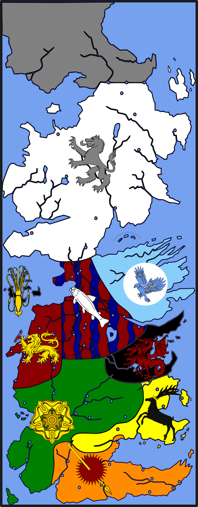

The Seven Kingdoms ( Seven Kingdoms )
The Seven Kingdoms is a realm located on the continent of Westeros, ruled by the Lord of the Seven Kingdoms, the king who sits on the Iron Throne in the capital city, King’s Landing. The name dates before the time of when Aegon the Conqueror set to unite the lands of Westeros, when there were seven independent kingdoms. Today there are nine distinct regions.
When Aegon landed on the continent of Westeros, it was made up of seven individually-ruled kingdoms: the Kingdom of the North, the Kingdom of Mountain and Vale, the Kingdom of the Isles and Rivers, the Kingdom of the Rock, the Kingdom of the Reach, the Kingdom of the Storm, and Dorne.
Aegon managed to conquer only six of the seven kingdoms, consolidating them under the rule of House Targaryen and the Iron Throne. The addition of Dorne occurred two centuries later through diplomatic means.
